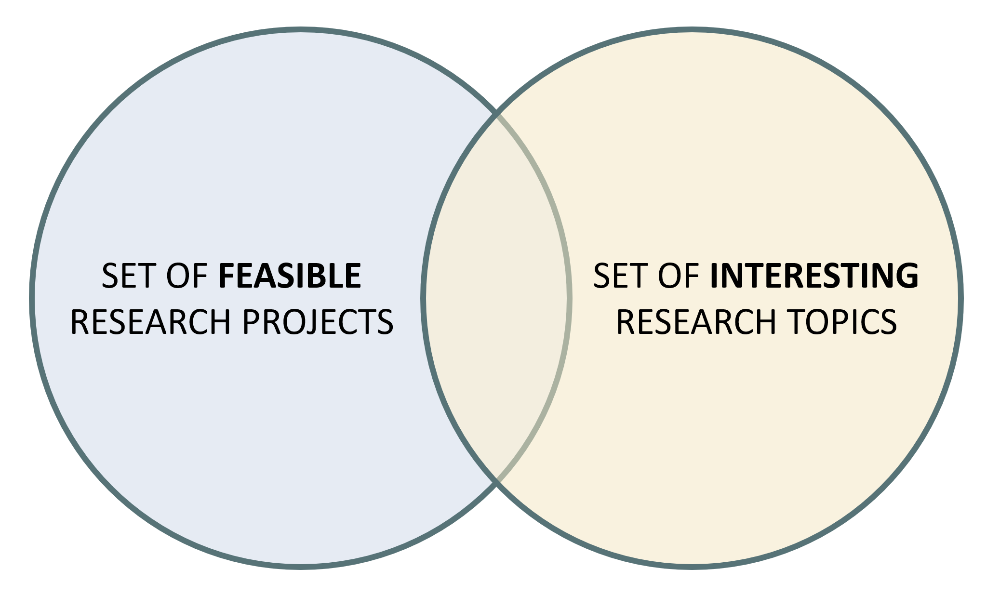

Getting Started with Your Dissertation
Introduction
Writing a dissertation is an opportunity to study a specific topic in depth, develop independent research skills, and build expertise in a particular subject area. It also strengthens critical thinking: you need to evaluate information, formulate arguments, choose appropriate evidence, and draw logical conclusions. Beyond academic skills, the dissertation develops perseverance, time management, and confidence in completing a substantial independent project. A well-written dissertation can also demonstrate your expertise and may become a useful asset when applying for jobs or graduate programmes.
How to Begin
A good dissertation project usually starts with five steps:
Find a topic that you find interesting.
Identify a feasible research project.
Formulate a relatively narrow research question.
Find suitable data, if the project is empirical.
Think carefully about the methodology or model.
The overall aim is to find a project that is both interesting and feasible: interesting enough to motivate sustained work, and feasible enough to complete within the dissertation period.
1. Find an Interesting Topic
Choose a topic because it genuinely interests you, not simply because it looks easy. You will spend several months working on the dissertation, so it is important to choose something that motivates you and raises questions you would like to answer.
A useful way to generate ideas is to read the titles and abstracts of recent articles in relevant journals, such as the Journal of Monetary Economics, or to look at recent working papers in your field. At this early stage, the goal is not necessarily to find a final research question, but to identify a broad area that you find intellectually engaging.
2. Identify a Feasible Research Project
A dissertation topic must also be feasible. This means that there should be a realistic research design that allows you to answer the question, or at least to make meaningful progress on it.
For an empirical project, feasibility usually depends on three things:
whether suitable data are available;
whether the data are appropriate for the question;
whether you understand, or can learn, the econometric method required for the analysis.
For a theoretical project, feasibility depends on whether the model is manageable, clearly motivated, and possible to solve, analyse, or simulate within the available time. A dissertation model does not need to be extremely complex. In many cases, a simple model that is well motivated, clearly solved, and carefully interpreted is better than an ambitious model that cannot be completed properly.
The ideal project lies at the intersection of what is interesting and what is feasible.

3. Formulate a Narrow Research Question
Avoid research questions that are too broad. A very broad question often leaves you without a clear strategy for how to answer it, and it can make the dissertation difficult to structure. A narrower research question helps you stay focused and makes it easier to decide which literature, data, model, and methodology are relevant.
For example, instead of asking a very general question about monetary policy and financial markets, you might ask: “Can monetary policy reduce the size of asset price bubbles?” This is still a substantial question, but it is more focused. It suggests possible answers such as yes, no, or only under certain conditions. The dissertation then becomes an argument about which answer is most convincing, based on theory, evidence, and analysis.
A good research question should be specific enough to guide the project, but not so narrow that there is nothing meaningful to discuss.
4. Find the Data
For empirical projects, data are essential. If the necessary data cannot be obtained, then the empirical project is unlikely to be feasible. Once you have a possible topic, you should therefore start looking for relevant data as soon as possible.
A useful strategy is to look at papers similar to your proposed project and read their data or methodology sections. Authors usually report where they obtained their data, how the variables were constructed, and what sample period they used. This can help you identify possible data sources and understand whether your own project is realistic.
Possible data sources include Bloomberg, FRED, DataStream, BEA, the Wind Economic Database, IMF, ONS, INSEE, Eurostat, the ECB Statistical Data Warehouse, OECD, BoardEx, CSMAR, and WRDS. Access may vary depending on institutional subscriptions, so you should check early whether you can actually obtain the data you need.
Some useful online data sources include:
The Shift Project Data Portal: https://theshiftdataportal.org/
IMF Climate Change Indicators Dashboard: https://climatedata.imf.org/
Our World in Data: https://ourworldindata.org/
5. Think About the Methodology or Model
You need to decide what framework you want to use and why. The method should be appropriate for the research question, the data, and the type of argument you want to make.
For empirical projects, possible methods include AR, VAR, SVAR, GARCH, ARIMA, difference-in-differences, and GSADF approaches. These methods are not interchangeable: each is designed for particular types of questions and data. For example, a VAR may be useful for studying dynamic relationships among time-series variables, while a difference-in-differences design is typically used to study the effect of a policy or treatment when a suitable comparison group is available.
For theoretical projects, possible frameworks include RBC models, New Keynesian models, and closed- or open-economy models. The key issue is not only the type of model, but also whether the assumptions are clearly stated and whether the model helps answer the research question.
You should also think carefully about the form of the model: which variables will be included, how they are related, and what the rationale is for your choices. A strong dissertation requires a clear and extensive argument explaining why the chosen framework and model are appropriate. The goal is not only to apply a method, but to show that you understand what you are doing.
Useful resources for econometric methods include books and papers such as Favero’s Applied Macroeconometrics, Fabozzi et al.’s The Basics of Financial Econometrics, Wang’s Financial Econometrics, Andersen et al.’s work on financial risk measurement, Koop and Korobilis on Bayesian multivariate time-series methods, Blake and Mumtaz on Bayesian econometrics for central bankers, and Kim on Markov-switching models. Dimitris Korobilis and Gary Koop also provide econometric code and resources online.
Data Treatment and Transformations
Once you have the data, you need to understand how to treat them before estimation. This step is often as important as the estimation itself. Important questions include:
Do the data need to be transformed, for example using logs, growth rates, differences, or ratios?
Should you use real or nominal values?
Are the variables stationary, or do they contain trends or unit roots?
Is there evidence of structural breaks?
Is endogeneity a concern?
Are there missing values, outliers, or measurement issues?
Which diagnostic tests or robustness checks should be applied before and after estimation?
You should review your econometrics material, use good textbooks, and consult reliable online resources. Published papers do not always report every preliminary test or robustness check, but careful researchers usually examine their data before estimating their main model. In your dissertation, you should be able to explain how you treated the data and why those choices are appropriate.
Replicating or Extending an Existing Paper
If you are uncertain about your project or struggling to find ideas, it is acceptable to start from a paper you like and replicate or extend it. This can be a very good way to learn how research is conducted.
However, the project should normally contain some element of novelty or independent contribution. For example, you could use different data, a different sample period, a slightly different model, the same method applied to a different country or sector, or an additional robustness check. The novelty does not have to be large, but you should be able to explain clearly how your dissertation differs from the existing paper and what is learned from that difference.
Empirical Dissertations
An empirical dissertation has the following structure:
Introduction and motivation.
Literature review.
Data.
Methodology or econometric framework.
Empirical results.
Robustness checks or additional analysis, where appropriate.
Conclusion, including limitations and possible extensions.
The introduction should explain the research question, why it matters, and what the dissertation aims to contribute. It should also give the reader a clear overview of the argument and, where possible, the main findings.
The literature review should position the dissertation within the existing research. It should not simply summarise papers one by one. Instead, it should explain what is already known, where there are gaps or disagreements, and how your dissertation relates to those debates.
The data section should describe the sources, variables, sample period, frequency, and any transformations applied to the data. It should be clear enough for the reader to understand exactly what has been used and why. If variables are constructed from raw data, the construction should be explained carefully.
The methodology section should justify the econometric approach. You should explain why the chosen method is suitable for the research question and the data. It is also important to discuss the assumptions behind the method and any limitations that may affect the interpretation of the results.
The results section should present the main empirical findings clearly. Tables and figures should be well labelled, and the discussion should focus on interpretation rather than simply reporting coefficients. The key question is what the results imply for the research question.
Robustness checks or additional analysis can strengthen the dissertation by showing whether the main findings are sensitive to alternative specifications, sample periods, variable definitions, or estimation methods. Not every dissertation needs many robustness checks, but a strong empirical dissertation should show awareness of the reliability and limitations of its results.
The conclusion should summarise the main argument and findings, discuss limitations, and suggest possible extensions. It should not introduce an entirely new argument, but it can explain what the dissertation contributes and what could be done next.
Theoretical Dissertations
A theoretical dissertation has a structure similar to an empirical dissertation. It typically includes:
Introduction and motivation.
Literature review.
Model.
Results, such as simulations, comparative statics, or proved propositions.
Conclusion, including limitations and possible extensions.
The dissertation should motivate and justify the research question. This may involve explaining why an existing approach is incomplete for a particular situation, identifying the contribution of the project, and assessing whether current theories can address the problem.
The methodology section should present the model clearly. You may develop a new approach or adapt existing models. It is often useful to begin with a simple baseline model and then add complexity only when it helps answer the research question. Assumptions should be clearly stated and should serve a purpose: they should help generate clear results, novel insights, or a useful worked example. The model should then be solved, tested, simulated, or analysed in a way that supports the argument of the dissertation.
Summary
In short: choose a topic that genuinely interests you, make sure the project is feasible, narrow the research question, secure the data where needed, and justify your methodology carefully. A strong dissertation is not necessarily the most complicated one; it is a project with a clear question, an appropriate method, careful execution, and a well-explained argument.
Information updated on 24/08/2026